Peñalolén · Av. Grecia 5961
¿Qué diámetro es cuál?
Barraca de Fierros Bustos y Muñoz: 161 reseñas con 4,5, fierro para maestros y constructoras.
- 161reseñas en Google
- 4,5de promedio
- 6días abierta; el sábado hasta las 13
- 0páginas donde cotizar: todo pasa por teléfono
Por diámetro
La carta del que llega con una lista
| Diámetro | Grosor | Dónde se suele ver |
|---|---|---|
| 6 mm | Estribos y amarras | |
| 8 mm | Estribos y mallas de radier | |
| 10 mm | Cadenas y vigas de una casa | |
| 12 mm | Pilares y vigas | |
| 16 mm | Fundaciones y losas | |
| 22 mm | Obra mayor |
Cómo se pide
diámetro × largo × cantidad + dirección de obra
Diámetros, usos y largos de referencia: el cálculo lo define el profesional de la obra.
El fierro se pide por diámetro.
Qué hay
Fierro, perfiles y mallas
-
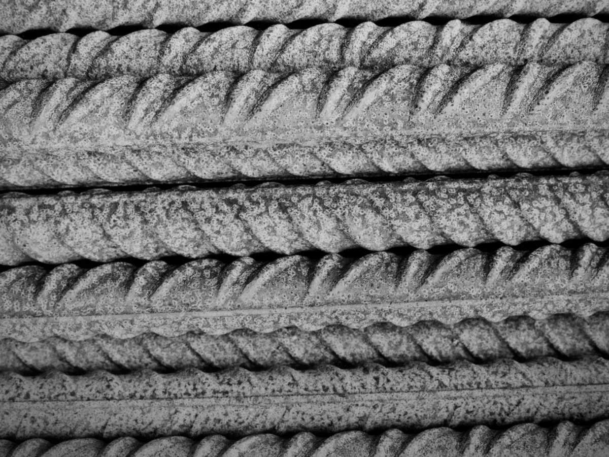
Estriado
Fierro de construcción
El que se pide por diámetro.
-
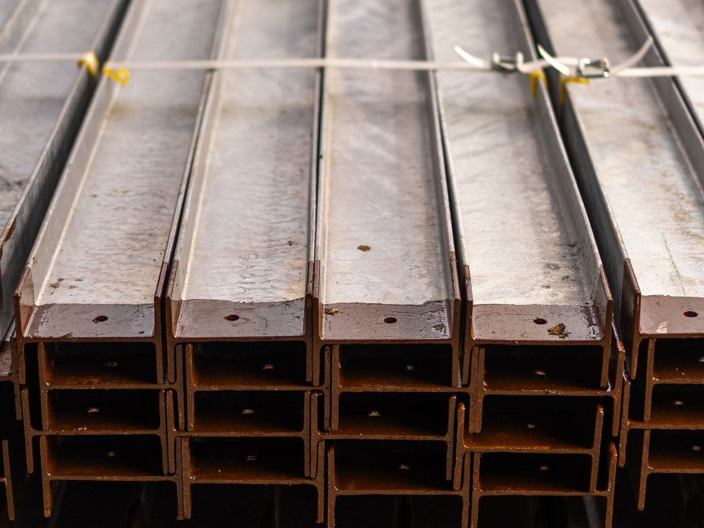
Perfiles
Vigas y canales
Para estructura y portones.
-
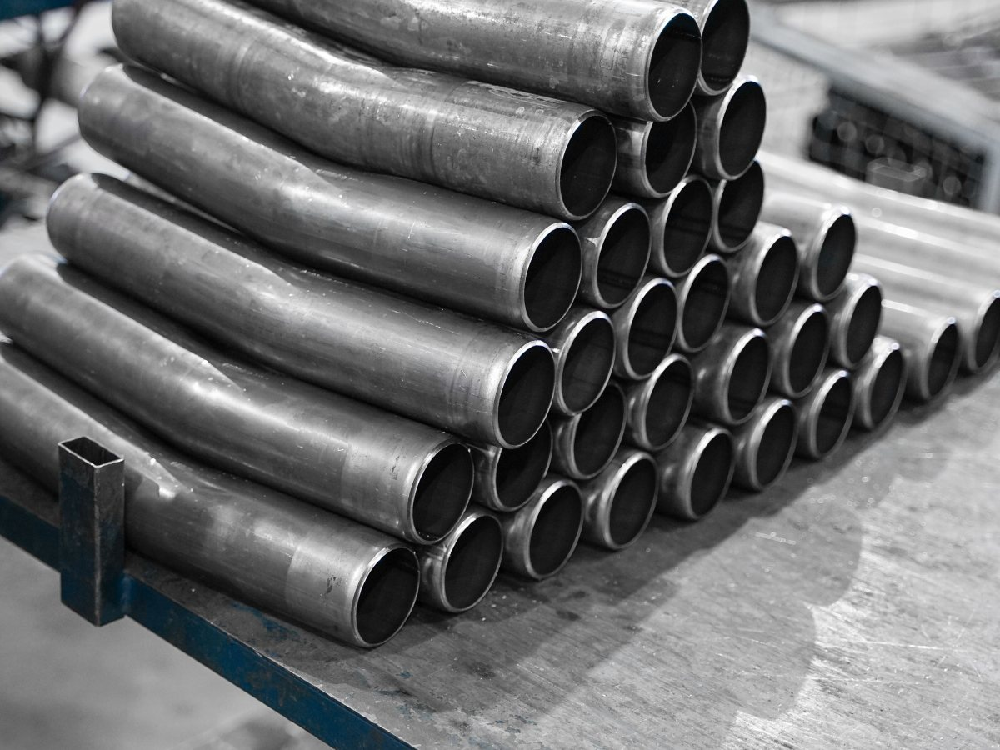
Tubos
Redondos y cuadrados
Para rejas y techumbres.
-
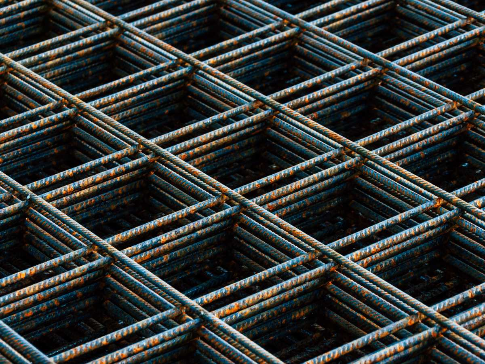
Mallas
Para radier
La cuadrícula ya amarrada.
-
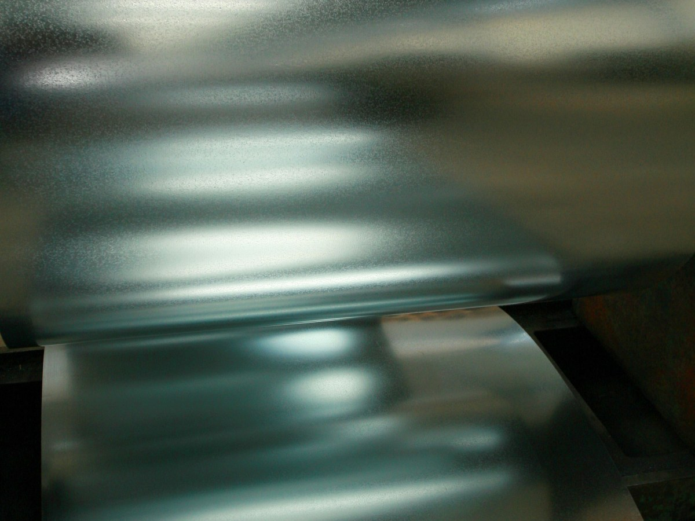
Planchas
Lisas y plegables
Pregunta espesores.
-
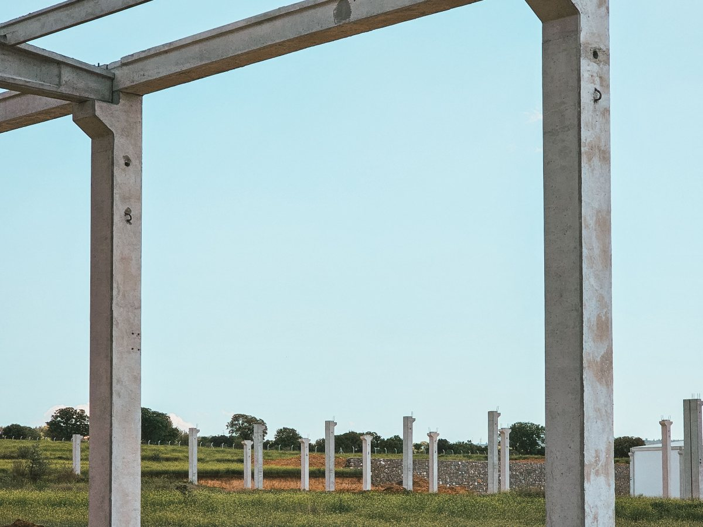
Entrega
A domicilio
Así figura en su ficha.
Familias de ejemplo, salvo la entrega: el surtido real, por teléfono.
«Muy buen stock y muy variados en las dimensiones».
Una reseña de Google
El patio
Acero a la intemperie
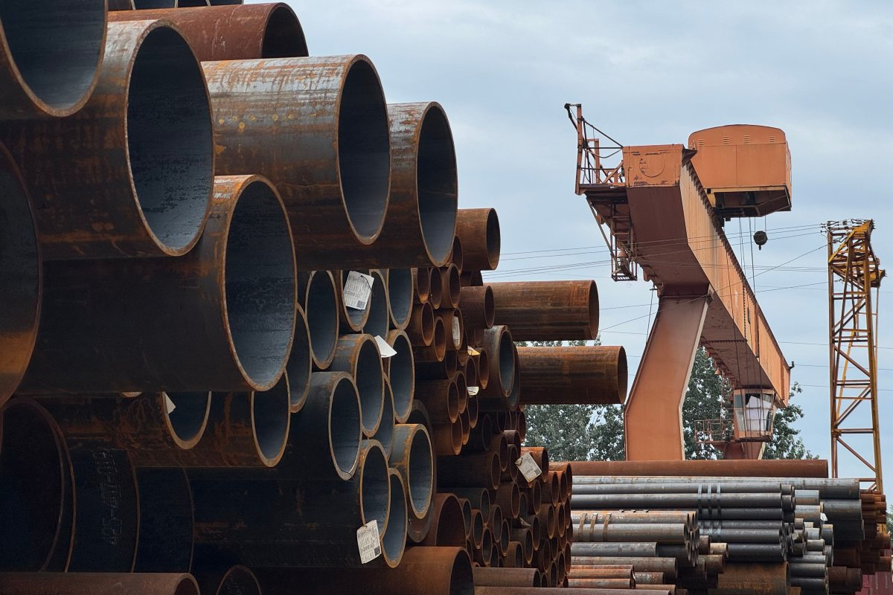
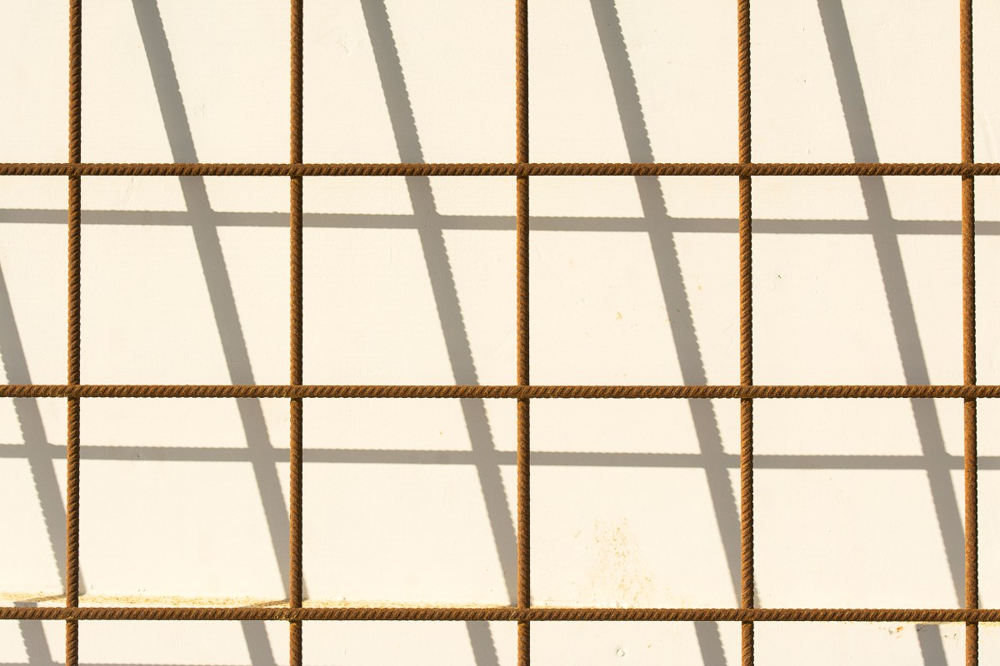
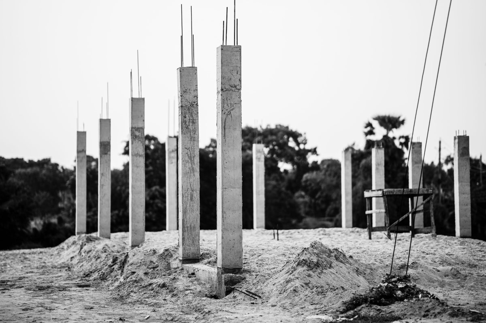
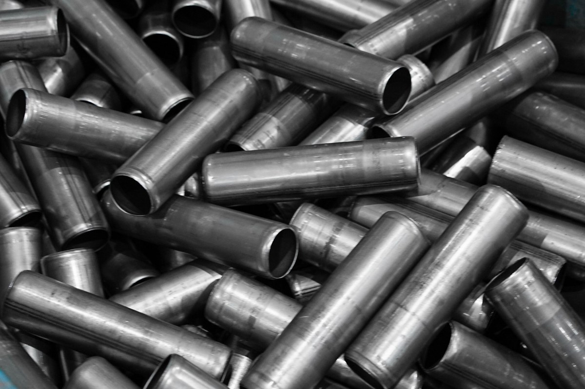
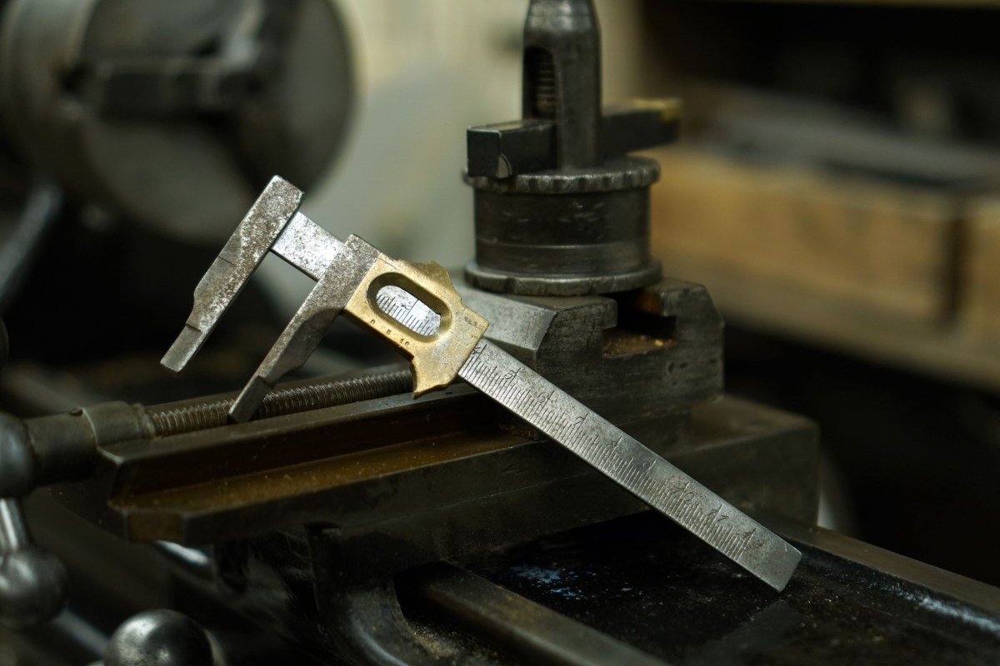
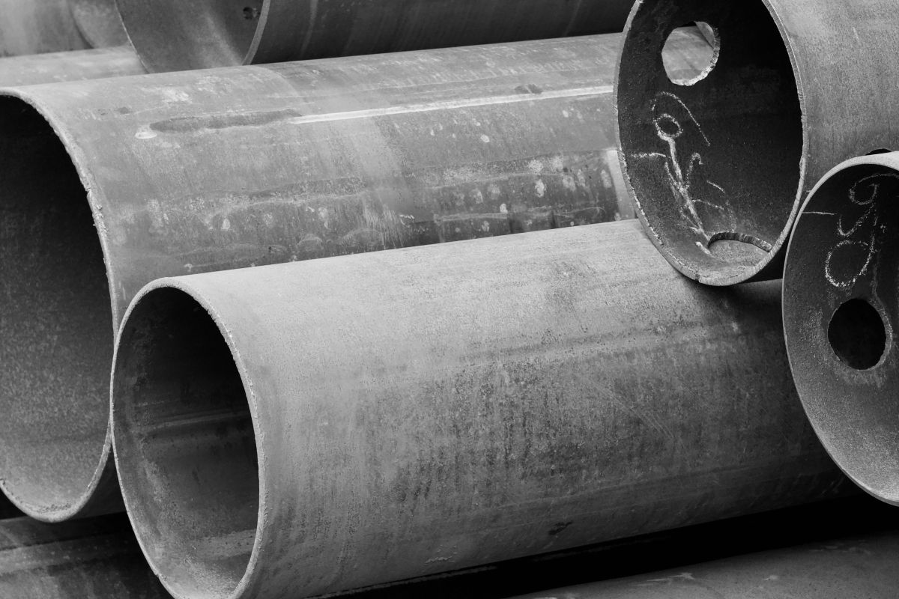
Fotos de referencia: ninguna es de la barraca.
Dónde está
Av. Grecia 5961, Peñalolén
- Teléfono
- (2) 2318 8875
- Lunes a viernes
- 9:00–17:00
- Sábado
- 9:00–13:00
- Domingo
- Cerrado
Compras en tienda, retiro en la puerta y entrega a domicilio.
Av. Grecia 5961 Abrir en Google Maps
Para la Barraca Bustos y Muñoz
Qué es real y qué falta
Lo verificado
Dirección, teléfono, horario, retiro, entrega y lo que dicen sus reseñas, al 14-09-2026.
Lo de ejemplo
La carta de diámetros, los usos, las familias de productos y las fotos.
Lo que falta
Una página donde cotizar: 161 reseñas y bustosymunoz.cl ni siquiera está registrado.